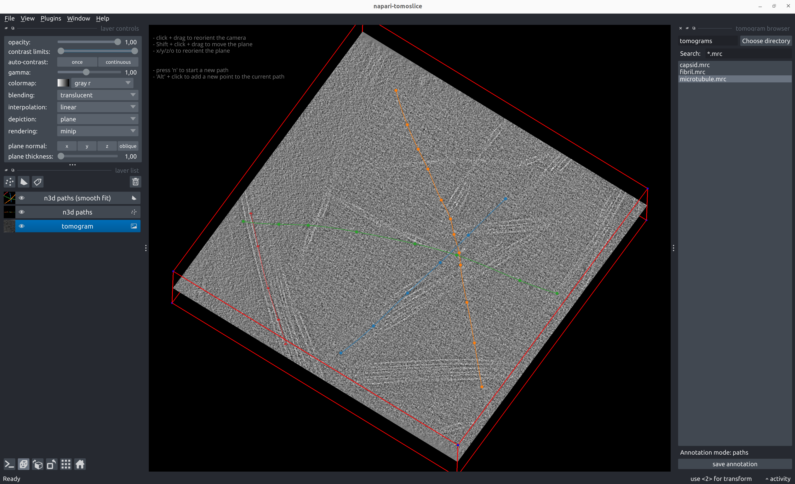
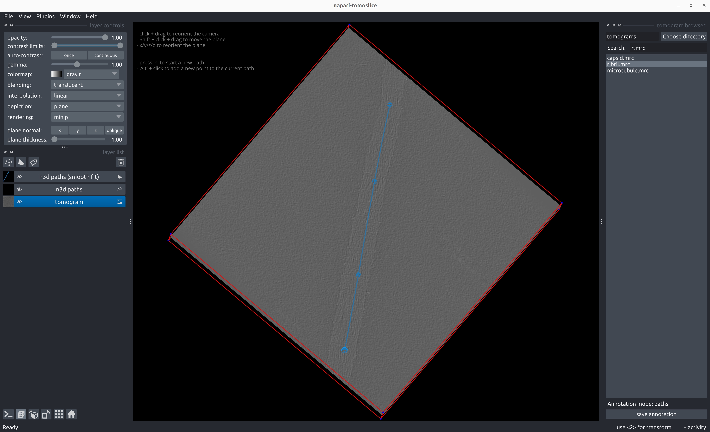
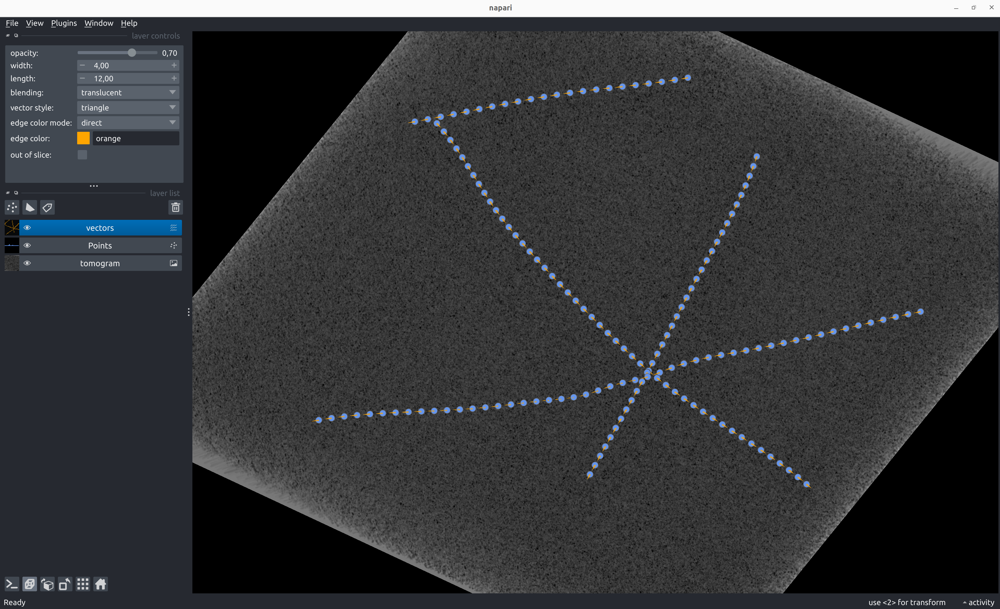
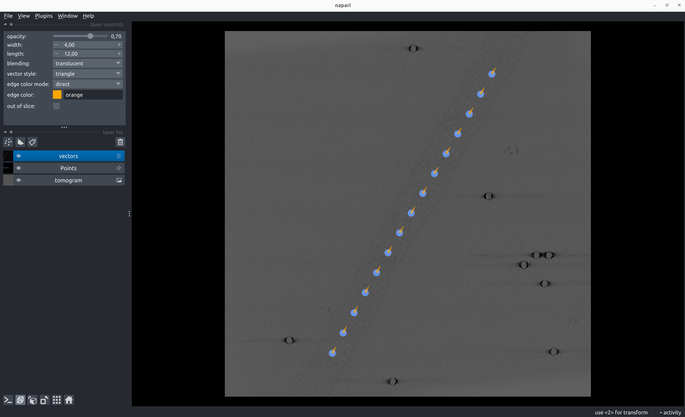
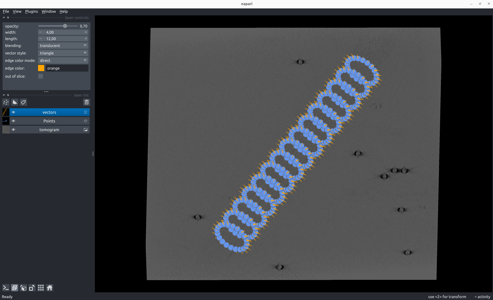

Paths
Annotate Paths
napari-tomoslice annotate \
--tomogram-directory tomograms/ \
--annotation-directory tomograms/annotations/ \
--mode paths
- Load a tomogram using the tomogram browser on the right panel
-
Annotate paths:
- Shift + click and drag to move the plane up/down
- Press 'x', 'y', 'z', or 'o' to reorient the plane
- Alt + click to add points to a path
- Press 'n' to start a new path
- To go back and change the position of a previously added point on the path:
- Select the point using 'Select points' from the Napari layer control panel on the left
- Click the new desired position of the selected point
-
Save path annotations with the 'save annotation' button on the right panel


Example path annotation STAR file
data_paths
loop_
_path_id #1
_x #2
_y #3
_z #4
0 544.339600 87.541283 143.654221
0 575.727539 216.720276 143.654221
0 599.883362 364.465271 143.654221
0 625.092346 502.951721 143.654221
0 644.559998 625.716187 143.654221
0 669.907593 788.138611 143.654221
1 949.780212 241.041260 119.062782
1 850.739319 349.160553 119.062782
1 757.877319 447.972382 119.062782
1 673.598145 540.173889 119.062782
1 649.529968 569.203552 125.231110
1 605.604736 606.439026 136.268234
1 571.453613 638.566162 148.028320
...
Generate Poses from Path Annotations
Backbone
napari-tomoslice generate-poses paths backbone \
--annotations-directory tomograms/annotations/ \
--output-star-file tomograms/backbone.star \
--distance-between-particles 20


Example backbone poses STAR file for path annotation
data_particles
loop_
_x #1
_y #2
_z #3
_rot #4
_tilt #5
_psi #6
_manifold_id #7
_tilt_series_id #8
544.339600 87.541283 143.654221 83.906794 90.000000 108.077827 0 TS_01
550.446462 107.202244 143.654221 83.906811 90.000000 106.456666 0 TS_01
556.020058 127.021101 143.654221 83.906825 90.000000 104.983386 0 TS_01
561.108958 146.970031 143.654221 83.906836 90.000000 103.664170 0 TS_01
565.764856 167.024545 143.654221 83.906844 90.000000 102.503192 0 TS_01
570.041693 187.163396 143.654221 83.906851 90.000000 101.503022 0 TS_01
573.994933 207.368340 143.654221 83.906855 90.000000 100.665014 0 TS_01
577.681008 227.623793 143.654221 83.906858 90.000000 99.989685 0 TS_01
581.156911 247.916420 143.654221 83.906860 90.000000 99.477026 0 TS_01
584.479922 268.234680 143.654221 83.906861 90.000000 99.126772 0 TS_01
587.707440 288.568351 143.654221 83.906861 90.000000 98.938590 0 TS_01
590.896888 308.908038 143.654221 83.906861 90.000000 98.912225 0 TS_01
594.105678 329.244677 143.654221 83.906861 90.000000 99.047559 0 TS_01
...
Helix
napari-tomoslice generate-poses paths helix \
--annotations-directory tomograms/annotations/ \
--output-star-file tomograms/helix.star \
--distance-between-particles 30 \
--twist 30
Rings
napari-tomoslice generate-poses paths rings \
--annotations-directory tomograms/annotations/ \
--output-star-file tomograms/rings.star \
--distance-between-particles 30 \
--number-of-points-per-ring 20 \
--ring-radius 30

Example ring poses STAR file for path annotation
data_particles
loop_
_x #1
_y #2
_z #3
_rot #4
_tilt #5
_psi #6
_manifold_id #7
_tilt_series_id #8
172.715260 462.534600 31.518678 -0.000000 121.067266 152.470202 0 TS_01
187.601372 434.386138 31.518681 0.000000 121.067261 151.800465 0 TS_01
202.812960 406.368763 31.518682 0.000000 121.067257 151.215781 0 TS_01
218.307508 378.463004 31.518684 -0.000000 121.067255 150.716523 0 TS_01
234.042799 350.648113 31.518685 0.000000 121.067253 150.302892 0 TS_01
249.976910 322.902269 31.518685 0.000000 121.067252 149.974978 0 TS_01
266.068179 295.202772 31.518685 -0.000000 121.067251 149.732799 0 TS_01
282.275139 267.526232 31.518686 -0.000000 121.067251 149.576337 0 TS_01
298.556435 239.848747 31.518686 -0.000000 121.067251 149.505567 0 TS_01
...
Convert Poses into Relion 5 STAR files
napari-tomoslice convert-poses \
--input-file tomograms/backbone.star \
--output-type relion5 \
--output-file tomograms/backbone-relion.star
Example Relion 5 STAR file for path annotation
data_
loop_
_rlnCoordinateX #1
_rlnCoordinateY #2
_rlnCoordinateZ #3
_rlnAngleRot #4
_rlnAngleTilt #5
_rlnAnglePsi #6
_rlnTomoManifoldIndex #7
_rlnTomoName #8
544.339600 87.541283 143.654221 83.906794 90.000000 108.077827 0 TS_01
550.446462 107.202244 143.654221 83.906811 90.000000 106.456666 0 TS_01
556.020058 127.021101 143.654221 83.906825 90.000000 104.983386 0 TS_01
561.108958 146.970031 143.654221 83.906836 90.000000 103.664170 0 TS_01
565.764856 167.024545 143.654221 83.906844 90.000000 102.503192 0 TS_01
570.041693 187.163396 143.654221 83.906851 90.000000 101.503022 0 TS_01
573.994933 207.368340 143.654221 83.906855 90.000000 100.665014 0 TS_01
577.681008 227.623793 143.654221 83.906858 90.000000 99.989685 0 TS_01
581.156911 247.916420 143.654221 83.906860 90.000000 99.477026 0 TS_01
584.479922 268.234680 143.654221 83.906861 90.000000 99.126772 0 TS_01
587.707440 288.568351 143.654221 83.906861 90.000000 98.938590 0 TS_01
590.896888 308.908038 143.654221 83.906861 90.000000 98.912225 0 TS_01
594.105678 329.244677 143.654221 83.906861 90.000000 99.047559 0 TS_01
597.391177 349.569046 143.654221 83.906861 90.000000 99.344633 0 TS_01
...